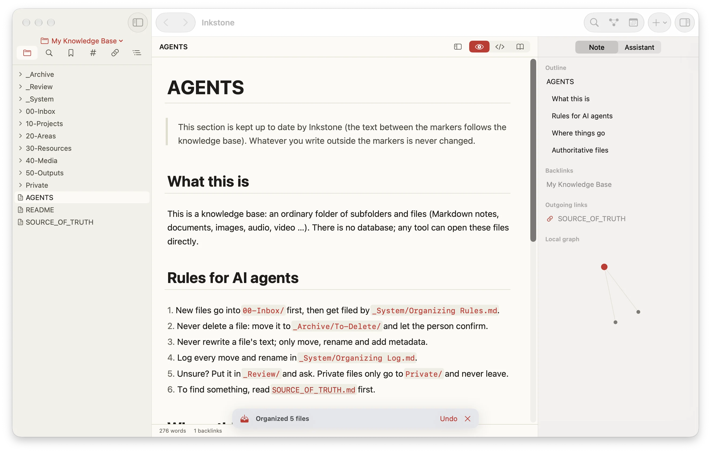

Inkstone › AI 컨텍스트 관리
AI 컨텍스트 관리, 알아서 최신으로
AI 어시스턴트는 건네받은 파일과 그 설명만큼만 잘합니다. Inkstone은 그 컨텍스트를 지식 베이스에 쓰고, 폴더가 바뀔 때마다 다시 씁니다.

AI 컨텍스트 관리란?
컨텍스트는 AI 모델이 답하기 전에 보는 것, 즉 파일과 그 파일에 대한 지시입니다. 관리한다는 것은 어시스턴트가 어떤 파일을 읽을지, 폴더가 어떻게 구성됐는지, 두 파일이 다를 때 무엇이 기준인지를 정하는 일입니다.
손으로 쓴 컨텍스트는 일주일이면 낡습니다. 메모가 옮겨지고 폴더 이름이 바뀌면 어시스턴트는 자신 있게 틀립니다.
Inkstone이 쓰는 입구 파일 세 개
AGENTS.md는 코딩 에이전트와 AI 어시스턴트가 폴더 맨 위에서 찾는 관례입니다. Inkstone은 자신의 표시 사이 부분만 다시 쓰며, 그 밖에 쓴 내용은 그대로입니다.
- AGENTS.md — 이 지식 베이스가 무엇이고 에이전트가 여기서 지킬 규칙: 새 파일이 갈 곳, 아무것도 삭제하지 않는다는 것, 비공개 폴더는 건드리지 않는다는 것.
- README.md — 사람과 기계 모두를 위한 폴더 지도.
- SOURCE_OF_TRUTH.md — 무엇에 대해 어떤 파일이 기준인지. 에이전트가 두 버전 사이에서 추측하지 않게 합니다.
폴더를 따라가는 컨텍스트
정리할 때마다 Inkstone은 입구 파일을 지금 있는 폴더에 맞게 갱신합니다. 월요일에 건네든 석 달 뒤에 건네든 지도는 최신입니다.

기본값부터 비공개
정리에 쓰는 모델은 기기에서 실행됩니다. AGENTS.md는 비공개 폴더를 출입 금지로 명시하고, 클라우드 모델을 켜 두었더라도 비공개로 보이는 파일은 보내지 않습니다.
자주 묻는 질문
어떤 AI 도구가 AGENTS.md를 읽나요?
폴더 맨 위의 평범한 Markdown 파일이므로, 폴더를 받은 어시스턴트나 에이전트라면 읽을 수 있습니다. 많은 코딩 에이전트가 이름으로 찾습니다.
AGENTS.md를 직접 고칠 수 있나요?
네. Inkstone은 표시 사이 부분만 다시 씁니다. 그 위나 아래에 쓴 지시는 유지됩니다.
AI 정리를 쓰지 않아도 되나요?
네. 입구 파일은 지식 베이스를 만들 때 작성되고, 규칙으로 분류하든 모델로 분류하든 최신으로 유지됩니다.